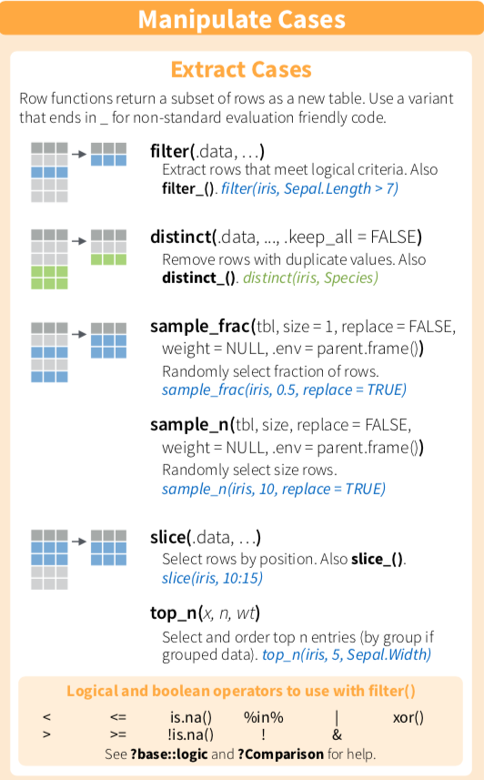

Chapter 5 篩選適當觀察值filter()

filter 是針對列(row)，或者說觀察值(obervations)，做子集合，目的是尋找滿足特定條件的資料點
- 基本用法
flights %>% filter(month==1, day==2)## # A tibble: 943 x 19
## year month day dep_time sched_dep_time dep_delay
## <int> <int> <int> <int> <int> <dbl>
## 1 2013 1 2 42 2359 43
## 2 2013 1 2 126 2250 156
## 3 2013 1 2 458 500 -2
## 4 2013 1 2 512 515 -3
## 5 2013 1 2 535 540 -5
## 6 2013 1 2 536 529 7
## 7 2013 1 2 539 545 -6
## 8 2013 1 2 554 600 -6
## 9 2013 1 2 554 600 -6
## 10 2013 1 2 554 600 -6
## # ... with 933 more rows, and 13 more variables:
## # arr_time <int>, sched_arr_time <int>,
## # arr_delay <dbl>, carrier <chr>, flight <int>,
## # tailnum <chr>, origin <chr>, dest <chr>,
## # air_time <dbl>, distance <dbl>, hour <dbl>,
## # minute <dbl>, time_hour <dttm>- 加入logical and boolean operators
眾多logical and boolean operators，請參考cheatsheet
flights %>% filter(dep_delay <= 20 & arr_delay <= 20)## # A tibble: 249,192 x 19
## year month day dep_time sched_dep_time dep_delay
## <int> <int> <int> <int> <int> <dbl>
## 1 2013 1 1 517 515 2
## 2 2013 1 1 533 529 4
## 3 2013 1 1 544 545 -1
## 4 2013 1 1 554 600 -6
## 5 2013 1 1 554 558 -4
## 6 2013 1 1 555 600 -5
## 7 2013 1 1 557 600 -3
## 8 2013 1 1 557 600 -3
## 9 2013 1 1 558 600 -2
## 10 2013 1 1 558 600 -2
## # ... with 249,182 more rows, and 13 more variables:
## # arr_time <int>, sched_arr_time <int>,
## # arr_delay <dbl>, carrier <chr>, flight <int>,
## # tailnum <chr>, origin <chr>, dest <chr>,
## # air_time <dbl>, distance <dbl>, hour <dbl>,
## # minute <dbl>, time_hour <dttm>- 做變數計算並作為篩選條件
flights %>% filter(dep_delay + arr_delay <= 30)## # A tibble: 256,128 x 19
## year month day dep_time sched_dep_time dep_delay
## <int> <int> <int> <int> <int> <dbl>
## 1 2013 1 1 517 515 2
## 2 2013 1 1 533 529 4
## 3 2013 1 1 544 545 -1
## 4 2013 1 1 554 600 -6
## 5 2013 1 1 554 558 -4
## 6 2013 1 1 555 600 -5
## 7 2013 1 1 557 600 -3
## 8 2013 1 1 557 600 -3
## 9 2013 1 1 558 600 -2
## 10 2013 1 1 558 600 -2
## # ... with 256,118 more rows, and 13 more variables:
## # arr_time <int>, sched_arr_time <int>,
## # arr_delay <dbl>, carrier <chr>, flight <int>,
## # tailnum <chr>, origin <chr>, dest <chr>,
## # air_time <dbl>, distance <dbl>, hour <dbl>,
## # minute <dbl>, time_hour <dttm>- 看起來比較特別的%in%，是什麼？
#基本理解是：是否出現該字眼，或者説是否包含於。
#在字串變數(character)的挑選，以及其他字串操作上很常用
flights %>% filter(carrier %in% c("UA","US"), dep_delay + arr_delay <= 30)## # A tibble: 63,006 x 19
## year month day dep_time sched_dep_time dep_delay
## <int> <int> <int> <int> <int> <dbl>
## 1 2013 1 1 517 515 2
## 2 2013 1 1 533 529 4
## 3 2013 1 1 554 558 -4
## 4 2013 1 1 558 600 -2
## 5 2013 1 1 558 600 -2
## 6 2013 1 1 559 600 -1
## 7 2013 1 1 607 607 0
## 8 2013 1 1 611 600 11
## 9 2013 1 1 622 630 -8
## 10 2013 1 1 623 627 -4
## # ... with 62,996 more rows, and 13 more variables:
## # arr_time <int>, sched_arr_time <int>,
## # arr_delay <dbl>, carrier <chr>, flight <int>,
## # tailnum <chr>, origin <chr>, dest <chr>,
## # air_time <dbl>, distance <dbl>, hour <dbl>,
## # minute <dbl>, time_hour <dttm>範例
若完成，請直接貼到open chat
若有一位買家對於這32台車子很有興趣，特別是在省油表現（Miles/(US) gallon, mpg)，以及馬力表現(hp, Gross horsepower)有很大的興趣，你要整理哪些資料？
後來他希望能夠買到馬力性能比較強的車，他要求你將馬力表現高於平均的車款額外整理給他，應該怎麼做呢？
mtcars自主練習
- 延續上一題，若該位總管，除了重視防守之外，他也很重視球員耐戰程度，假設整個球季上場就過2500分鐘可以視為高耐戰族群，要怎麼做才能知道有哪些球員？